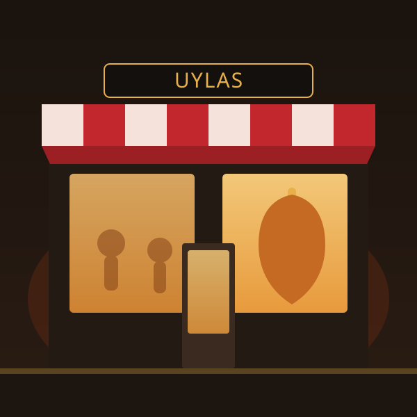
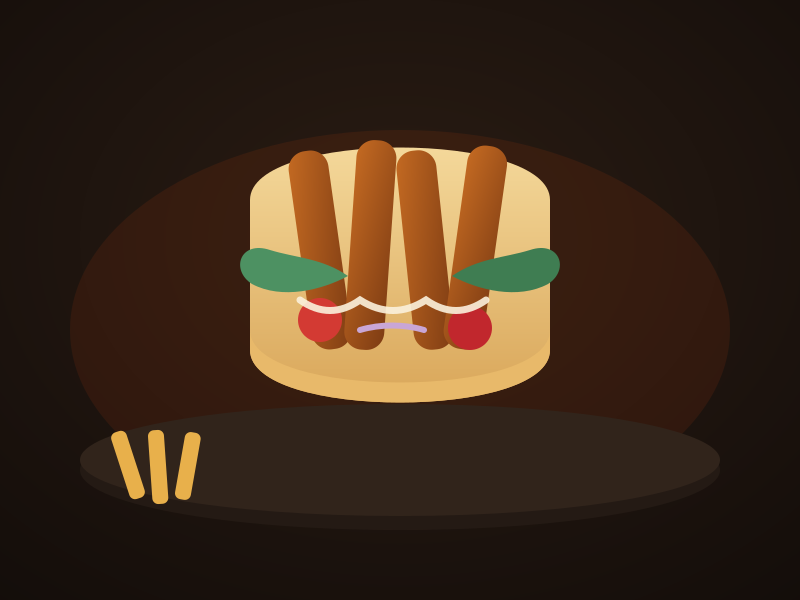

Panino Doner Kebab
€ 9,00Carne di vitello e tacchino, insalata, pomodoro, cipolla e salse.
Carne marinata e cotta alla brace, pizza con impasto fatto in casa, durum, piadine e falafel. Da gustare al tavolo, da asporto o a domicilio.
Uylas Kebap Center nasce dalla passione per la vera cucina turca di strada: carne selezionata, marinata con spezie e cotta lentamente alla brace, pane caldo ogni giorno e una pizza preparata con impasto fatto in casa.
Con tre sedi a Cornaredo, Bareggio e Sedriano serviamo famiglie, studenti e lavoratori che cercano un pasto generoso, onesto e veloce — al tavolo, da asporto o comodamente a casa. Ingredienti freschi, porzioni abbondanti e il sorriso di sempre.

Pizza cotta nel forno a legna e carne kebab alla brace ogni giorno, per un sapore autentico.
Verdure di giornata, pane caldo e impasto pizza fatto in casa. Niente scorciatoie.
Dal martedì alla domenica, 11:00–24:00 senza interruzione. Lunedì chiuso. Si accettano buoni pasto.
A Cornaredo, Bareggio e nei comuni vicini con Just Eat e Deliveroo, oppure ordina e ritira.



Illustrazioni del brand — sostituiscile con le foto reali dei tuoi piatti quando vuoi.
Centinaia di recensioni positive da clienti di Cornaredo, Bareggio, Pero e Rho.
„Il miglior kebab della zona, porzioni enormi e prezzo onesto. Carne saporita e personale gentilissimo.“
„Ordiniamo a casa quasi ogni venerdì. Pizza e durum sempre puntuali e caldi. Consigliatissimo!“
„Locale pulito, servizio veloce e falafel davvero buoni. Ottimo anche per chi non mangia carne.“
Testimonianze illustrative. Leggi le recensioni reali sul nostro profilo Google.
Consegna a domicilio gratuita a Cornaredo; nei comuni confinanti 2 €, gratis per ordini superiori a 15 €. Ordina sulle app o chiamaci per asporto e prenotazioni.
Asporto pronto in pochi minuti · Prenotazione tavoli disponibile
Uylas Kebap Center a Cornaredo, Bareggio e Sedriano — sempre vicino a te nell'ovest milanese.
Mar–Dom 11:00–24:00 · Lunedì chiuso
Tutti i giorni 12:00–24:00
Mar–Dom 11:30–24:00 · Lunedì chiuso